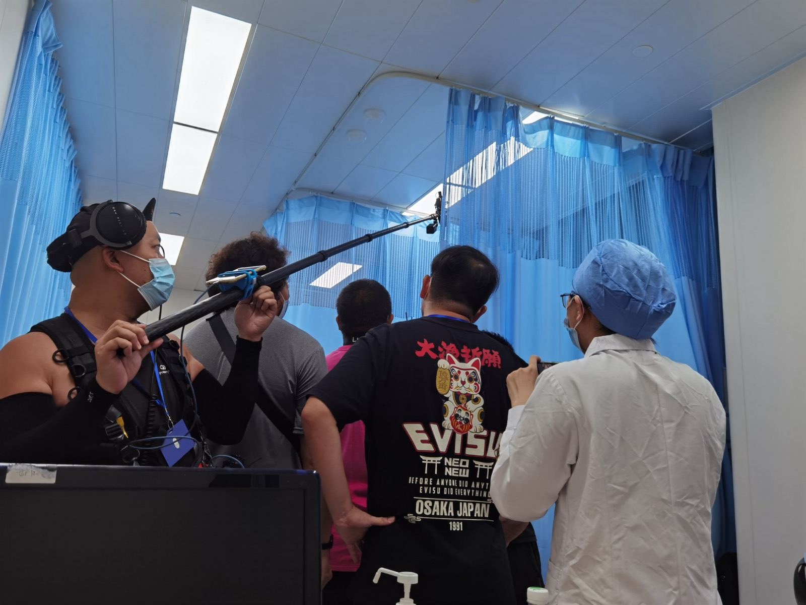
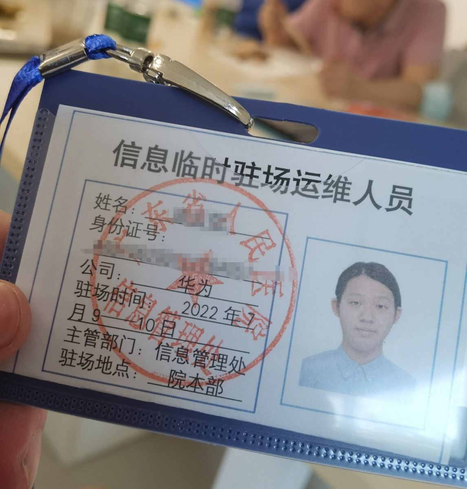

Project / 2022
广东省人民医院 5G 医疗宣传片
- 单位
- 广东省人民医院
- 担任
- 场景布置 · 音乐顾问
- 驻场拍摄
- 2022.07.09 – 07.10 · 院本部

01拍摄现场
宣传片在院内病房场景实地拍摄，摄制组于床帘前取景，录音师举杆同期收音。
On set inside a hospital ward: the crew framing a shot at the bed curtains while the sound recordist captures live audio on a boom.
院内の病室で実地撮影。カーテン前で撮影クルーが画を作り、録音技師がブームで同時録音。

02驻场证件
广东省人民医院信息管理处签发的“信息临时驻场运维人员”证，驻场时间 2022 年 7 月 9 日至 10 日，地点院本部。姓名与身份证号已打码。
Temporary on-site pass issued by the hospital’s Information Management Office, valid 9–10 July 2022 at the main campus. Name and ID number blurred.
病院の情報管理処が発行した臨時駐在スタッフ証（2022年7月9日〜10日、本院）。氏名と身分証番号はぼかし処理済み。